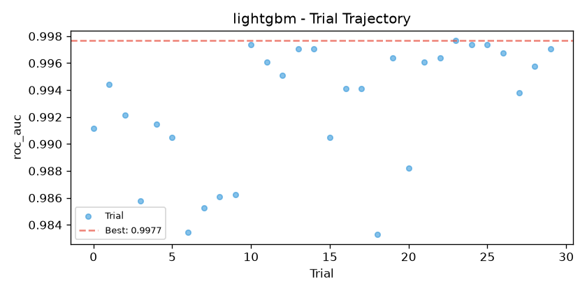
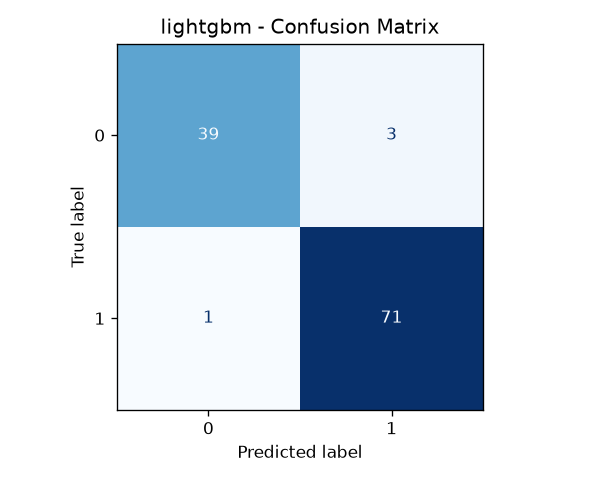
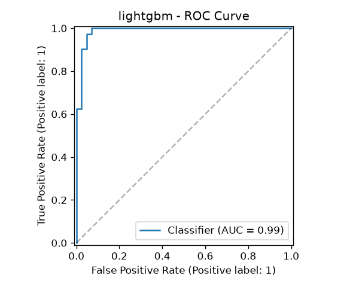

| 数据集 | accuracy | balanced_accuracy | f1 | f1_macro | roc_auc | precision | recall |
|---|---|---|---|---|---|---|---|
| 训练集 | 1.0000 | 1.0000 | 1.0000 | 1.0000 | 1.0000 | 1.0000 | 1.0000 |
| 验证集 | 0.9649 | 0.9627 | 0.9718 | 0.9627 | 0.9977 | 0.9718 | 0.9718 |
| 测试集 | 0.9649 | 0.9573 | 0.9726 | 0.9619 | 0.9881 | 0.9595 | 0.9861 |
n_estimatorsmax_depthlearning_ratesubsamplecolsample_bytreemin_child_samplesnum_leavesreg_alphareg_lambda